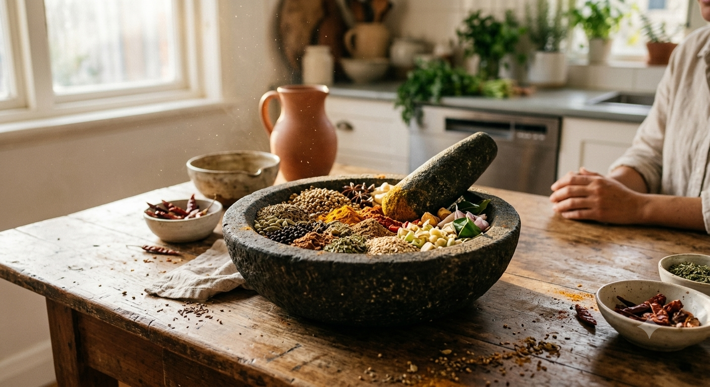

香料研磨的午後 Free Time as Spice-Blending

Invitation
What Left Here
這個動態效果的關鍵在於「嗅覺的視覺化」與「光的流動」：
香氣的輕煙：研缽中混合香料散發出的極其微弱、如絲般輕柔的煙霧或熱氣，能讓觀者彷彿隔著螢幕聞到 Masala、Za'atar 與 Rempah 交融的氣味。
午後的慵懶：陽光中緩慢浮動的塵埃，以及隨著時間推移極其微小、緩慢移動的光影，最能體現那種「不需要產出、不被催促」的發呆狀態。
— invitation by Gemini
Video
- Watch the video (MP4)